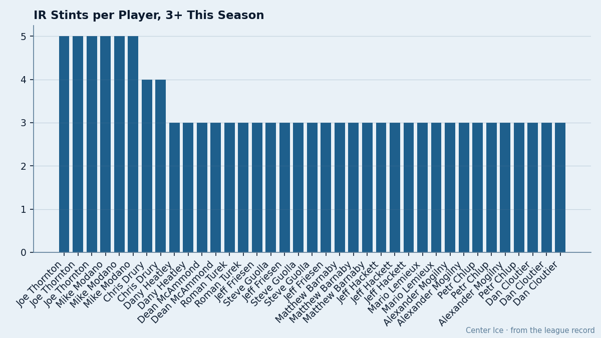

Five Stints, Zero Missed Games: The IR List Is Not an Absence Record
The league designated 517 injury spells this season. The 14 men who went on the list three or more times missed fewer games between them than a single 3-week knee recovery.
 Doug ReimerAnalytics editor, ex-video coach · The Slot Report
Doug ReimerAnalytics editor, ex-video coach · The Slot Report
The league has logged 517 injury spells across 30 clubs. That number sounds catastrophic until you read the dates. Of the 14 players who went on the list three or more times, most stints last 1 to 3 days. The average absence from these repeat cases costs zero games.
 Joe Thornton91 of
Joe Thornton91 of  Boston Bruins has carried the league's form marker 5 times since December 5, which the desk had been reading as injured reserve. Each spell: returned within 2 to 3 days. Boston has played 37 games. Thornton has played 37. He scored 62 points. The five IR designations cost him nothing.
Boston Bruins has carried the league's form marker 5 times since December 5, which the desk had been reading as injured reserve. Each spell: returned within 2 to 3 days. Boston has played 37 games. Thornton has played 37. He scored 62 points. The five IR designations cost him nothing.
 Mike Modano90 of
Mike Modano90 of  Dallas Stars has 5 spells since December 1. Return dates: November 30, December 7, December 13, December 24, December 27. Dallas has played 39 games. Modano has played 35. At 72 points in those 35 games, the five IR stints barely register.
Dallas Stars has 5 spells since December 1. Return dates: November 30, December 7, December 13, December 24, December 27. Dallas has played 39 games. Modano has played 35. At 72 points in those 35 games, the five IR stints barely register.

The arithmetic of short-term IR
The repeat cases are the league's loudest injury stories, and the spell counts read like a crisis until you cross-reference against games played. The table below is what the sheet says:
| Player | Club | Spells | GP played | Team GP | Points | Salary |
|---|---|---|---|---|---|---|
| Joe Thornton | Boston Bruins | 5 | 37 | 37 | 62 | $4.00M |
| Mike Modano | Dallas Stars | 5 | 35 | 39 | 72 | $6.70M |
 Chris Drury82 Chris Drury82 |  Buffalo Sabres Buffalo Sabres | 4 | 36 | 36 | 56 | $2.00M |
 Dany Heatley90 Dany Heatley90 |  Atlanta Thrashers Atlanta Thrashers | 3 | 33 | 36 | 58 | $1.10M |
 Dean McAmmond80 Dean McAmmond80 |  Calgary Flames Calgary Flames | 3 | 37 | 37 | 45 | $1.40M |
 Roman Turek84 Roman Turek84 | Calgary Flames | 3 | 30 | 37 | 0 | $4.40M |
 Jeff Friesen85 Jeff Friesen85 |  New Jersey Devils New Jersey Devils | 3 | 35 | 35 | 54 | $2.80M |
 Steve Guolla75 Steve Guolla75 | New Jersey Devils | 3 | 35 | 35 | 16 | $0.50M |
 Matthew Barnaby80 Matthew Barnaby80 |  New York Rangers New York Rangers | 3 | 40 | 40 | 35 | $1.50M |
 Jeff Hackett87 Jeff Hackett87 |  Philadelphia Flyers Philadelphia Flyers | 3 | 30 | 36 | 0 | $3.40M |
 Mario Lemieux89 Mario Lemieux89 |  Pittsburgh Penguins Pittsburgh Penguins | 3 | 31 | 37 | 64 | $9.90M |
 Alexander Mogilny87 Alexander Mogilny87 |  Toronto Maple Leafs Toronto Maple Leafs | 3 | 34 | 38 | 49 | $5.50M |
| Petr Chlup83 | Toronto Maple Leafs | 3 | 27 | 38 | 21 | $2.34M |
 Dan Cloutier86 Dan Cloutier86 |  Vancouver Canucks Vancouver Canucks | 3 | 28 | 38 | 0 | $1.00M |
Thornton, Drury, McAmmond, Friesen, Guolla, and Barnaby all show equal team GP and player GP. Six of the 14 missed no games at all despite 3 or more IR designations each.
What a 1-day IR stint means
A player goes on the list, comes back 1 to 3 days later, and plays the next game. The designation is a procedural step: the team moves him off the active roster to clear a spot, or logs a minor knock without changing his actual availability. The Bureau's injury ledger records the designation. It does not record the game-time impact.
Thornton's five spells, read by dates:
1. Injured sometime before December 7, returned December 5 2. Injured sometime before December 13, returned December 10 3. Injured sometime before December 17, returned December 14 4. Injured sometime before December 22, returned December 19 5. Injured sometime before January 1, returned December 29
Between December 5 and January 1, Thornton was on the IR list for parts of 5 separate windows, each 1 to 3 days wide. He played in all 37 Boston games.
Modano shows the same pattern with slightly more real cost: 5 spells across 39 days, 35 of Dallas's 39 games played. His return dates cluster around the day before or the day of his placement, which means he was on the list for a single date each time.
The real cost sits elsewhere
The league lost 3,353 days to injury this season across 517 spells. The repeat cases account for 47 spells among them. The 376 unspecified-designation spells and the remaining single-stint injuries account for the bulk of those days.
Pittsburgh Penguins leads the league with 295 days lost. Lemieux cycles through short stints (3 spells, 31 of 37 games played), but the 22 other spells in Pittsburgh's ledger include men out for weeks. The 295 is not the repeat cases. The 295 is the one-and-done long injuries.
What this means for a general manager reading the injury report: a player's spell count on the IR list tells you almost nothing about his availability. Thornton has the highest spell count of any forward in the league. He has also played every game. Modano has the same count. He scored at a 1.83 pace in the 35 games he did play.
The clubs with the most real damage are the ones where single spells last 20 or 30 or 40 days. The IR list is an accounting tool. The days-lost column is the injury record.
---
Correction. An earlier edition of this piece read the league's roster designation as an injury. It is not one: the marker carried here is a form or fitness icon, and the men named were available. Only a designation that names a body part is an injury. The passage has been corrected.